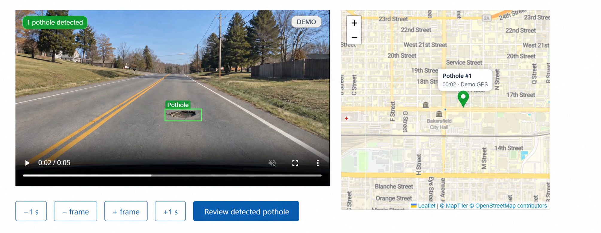

Back to Portfolio
Pothole In Progress
Python
OpenCV
Computer Vision
Pothole is an in-progress project for detecting and reporting potholes to help prioritize road maintenance and improve community safety.
Currently under active development, the project focuses on building accurate detection algorithms and planning future features for a web-based reporting system.
Key Features
- • Real-time pothole detection from images and video feeds
- • Map-based reporting for city maintenance teams
- • Dashboard for tracking detected issues and repair progress
- • Notifications for low confidence detections and maintenance status updates
Technical Challenges
Current development focuses on improving detection accuracy under varying lighting conditions, optimizing video processing performance, and designing a clean reporting workflow for non-technical users.
Technologies Used
Python
Core Language
OpenCV
Computer Vision
Git
Version Control
NumPy
Data Processing
